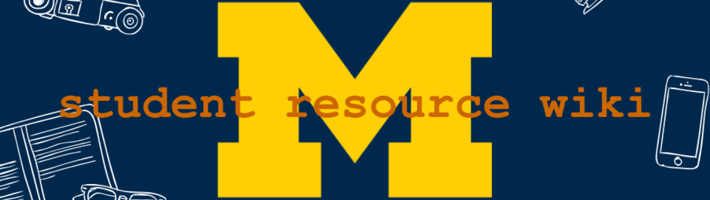
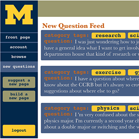

umich school of information masters student | intern for hire
UMich Student Resource Wiki
SEP - DEC 2018
Overview
I spent a semester developing the idea and implementation of this prototype in an interaction design course. As a student in higher education for nearly a decade, it baffles me that students are so often left to fend for themselves in overwhelming institutional bureaucracies while they're trying to navigate an already unfamiliar phase of their education. The design takes advantage of the fact that students are already likely to form communities and rely on each other for support through their educational journeys.
Design Functionality
The wiki operates generally very similarly to a wiki site most students will already be familiar with: Wikipedia. It additionally implements some components to encourage and center students’ questions and other students’ answers in a portal for asking questions, a feed of new questions with searchable topics, an easy way to start pages that address these questions.
The wiki was otherwise designed based on three major functional goals. First, that students looking for information are able to find what they are looking for quickly and easily. Target audience research showed that students’ greatest barrier to resolving their issues as they are meant to through this platform is that the perceived time and effort it would take for them to do so through available resources can be seen to outweigh the benefits of finding a satisfactory solution. I chose to implement a wiki structure because it is something familiar to most students and thus easy to use, searchable and thus can make student query searches more efficient, and critically because resources are permanently stored rather than just a stream of real-time issues that can be easily lost or forgotten. Because student questions are also often vague or based on incomplete knowledge, I also included a category tag based browsing system so students have an easy alternative path if they don’t know what to search or their search does not yield helpful results.
Second, because the traditional wiki structure is lacking in this functionality, I made the Query and Answer features prominent in the interface. When a user asks a question, they are asked to tag their query with applicable categories so that when the query is submitted and displays on the question feed, other users can see what the questions are about and search based on their areas of knowledge or expertise. When users choose to build a page to address a question and click the corresponding button on the query they want, it leads to a new article building form, pre-populated with the question text and with the question categories pre-loaded.
Finally, the wiki relies critically on building a campus-wide student network. Another key insight from the target audience research was that students are very likely to ask their peers for help when they run into issues with the university. The wiki structure takes this intuition and directs it to a more efficient system with a broader base of information. Even other platforms like Facebook and Canvas where students ask each other for help, are limited to a subset of students bound by a particular student’s social circles, graduation class, or classroom peers. However, as the platform is open access, it necessitated a way to assure relative accuracy and contributor accountability. I also included a “profile” function whereby users can hover over a particular user’s name in this chat and the user’s qualifying information (i.e. school, major, year, housing status) will appear so users can make informed decisions as to whether a particular contributor is qualified or informed enough to provide an accurate or helpful answer.
Design Development Process
Defining the Problem & Creating Personas
After establishing my goals, stakeholders, and some possible solutions, I did a competitive analysis and created user personas. The competitive analysis helped clarify what was actually helpful or unique about my ideas, which encouraged focus on these components throughout the rest of the process. The personas gave immediacy to users’ perspectives and were helpful to consolidate ideas about who I was actually designing for.
Sketches & User Research
Sketching and storyboarding were then implemented to help elaborate upon the details of each idea and elucidate its high-level advantages and disadvantages, which helped narrow down the options. Some field research (a Qualtrics survey distributed via Facebook) was then performed to learn about the target audience’s experiences and preferences, which led to the decision to implement the wiki structure.
Paper Prototype
I generated a paper prototype of the wiki after my research and had some students test it. The paper prototype as presented to some potential users helped fine-tune the features and interactions that made it to the final design. On the general level, the students I talked to appreciated the idea of a place for “floating questions” without a clear authority where they could feel comfortable drawing on peer feedback and knowledge and liked the idea of a searchable wiki-type database for these resources.They also affirmed the utility of the profiles, for both accountability and privacy and contributed to the idea that the in-chat profile display should be a hover-over feature rather than a click-through feature as I had originally designed, because the click-through disrupted the experience.As a result of this research, I also did away with a general chat room as they felt it didn’t add much and could quickly become overwhelming and chaotic to the point where it would become more trouble to use it than it would be help.
Arrival at Final Digital Prototype
After the development and testing of the paper prototype, I developed the digital prototype using InVision Studio based on my paper sketches. I believe the final design would have a uniquely functional role in student life, which was the goal from the initial development of the problem statement. The color palette was largely taken from the University of Michigan Style Guide but all other design elements were created from “scratch”. The visual and content details like article content and category tags missing from the lower-fidelity prototypes was filled in.
You can read a full report about the development of this website here